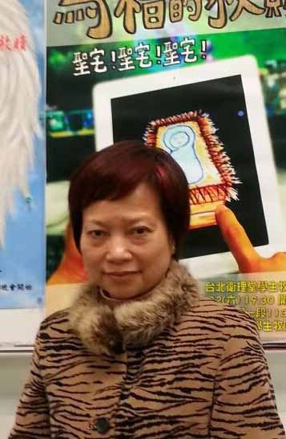

<html lang="en"></html><head><meta charset="UTF-8"/><title>EEweb</title><link rel="stylesheet" type="text/css" href="./semantic-ui/semantic.css"/><link rel="stylesheet" type="text/css" href="./asset/stylesheets/reset.css"/><link rel="stylesheet" href="./asset/stylesheets/record.css"/></head><body><div id="navbar" class="ui stackable menu container"><a href="./home.html" class="active item">EEWEB</a><a href="./home.html" class="item"><i class="home icon"></i>HOME</a><a href="./intro.html" class="item"><i class="empty star icon"></i>INTRO</a><a href="./library.html" class="item"><i class="book icon"></i>LIBRARY</a><a href="./record.html" class="item"><i class="history icon"></i>RECORDS</a></div><div class="ui container"><h4 class="ui horizontal divider header"><i class="tag icon"></i>Description</h4><div style="min-height:200px" class="ui tall stacked segment"><div class="teacher"></div><h2 class="ui">廣泛閱讀與國際關懷(博通-生涯發展類) <br/>READNING AND INTERNATIONAL HUMANITARIANISM </h2><a class="ui blue tag label">1041學期</a><a class="ui teal tag label">1CC1340T</a><a class="ui orange tag label">F班</a><a class="ui purple tag label">第1冊</a><br/><div class="ui list"><div class="item"><i class="flag icon"></i><div class="content"><div class="header">主題式引導教學</div><div class="description">透過主題式引導、情境氛圍塑造、英文故事讀本閱讀、影片賞析、國際學生/志工交流與專題演講，讓學生回顧以往的認知經驗，<br/>引發學習興趣，增進同理心與感受力。 </div></div></div><div class="item"><i class="help icon"></i><div class="content"><div class="header">認識與反思</div><div class="description">透過主題課程，引導學生對英文廣泛閱讀及普世所關切的重要議題有更深刻的認識與反思。 </div></div></div><div class="item"><i class="smile icon"></i><div class="content"><div class="header">互動式教學</div><div class="description">透過課前、課後問題討論與主題作業，訓練學生多元思考，培養分析、歸納、聯想、批判、統整知識的能力。 </div></div></div><div class="item"><i class="book icon"></i><div class="content"><div class="header">指定用書 1</div><div class="description">Dragon’s Eggs /J. M. Newsome Cambridge English Readers (Level 5) </div></div></div><div class="item"><i class="book icon"></i><div class="content"><div class="header">指定用書 2</div><div class="description">Nelson's Dream/ J. M. Newsome Cambridge English Readers (Level 6)  </div></div></div></div><br/><!-- - 課程介紹 end--></div><h4 class="ui horizontal divider header"><i class="trophy icon"></i>Class Records</h4><table class="ui celled padded table"><thead><tr><th class="single line"> 週次 </th><th> 課程內容 </th><th> 指定閱讀/教學活動安排 </th><th>課程進度</th></tr></thead><tbody></tbody><tr><td class="single line"><h2 class="ui center aligned header"> 第1週 </h2></td><td> 原來我們是一家人!We’re Family!四海皆兄弟! 廣泛閱讀_讀書、讀報、讀自己_我們的故事 國際時事知多少? </td><td>1.圖書館English Reading Corner巡禮 <br/>2.牛津書蟲讀本等系列介紹 http : //www.cavesbooks.com.tw/ files/webpage/bookweb/bookworms/index.html<br/></td><td class="right aligned single line"><a class="ui green circular label">100%</a><br/><br/><a href="./record_week1.html" class="ui label blue">相關記錄<div class="detail">45</div></a></td></tr><tr><td class="single line"><h2 class="ui center aligned header"> 第2週 </h2></td><td>國際關懷主題探討(一之一)：全球女性地位 1.破冰遊戲： to_be_a_woman 2. 認識全球傑出女性 : 書名與封面配對 3. 牛津書蟲閱讀圈 以Callus文本討論為例(FACEBOOK線上討論)</td><td>母親節卡片暨全球傑出女性書展 <br/>1.翁山蘇姬傳：自由無懼．因愛而戰 <br/>2.抉擇：希拉蕊回憶錄 <br/>3.改變世界的力量：梅克爾傳 <br/>4.上帝給王雪紅的十堂課 <br/>5.奧黛麗．赫本：一個優雅的靈魂 <br/>6.柴契爾夫人傳：深陷困境但絕不屈服 <br/>7.One Person CAN Change the World!(羅莎·帕克斯) <br/>8.黛安娜王妃<br/>9.居里夫人傳 <br/>10.我是馬拉拉<br/></td><td class="right aligned single line"><a class="ui green circular label">100%</a><br/><br/><a class="ui label">相關記錄<div class="detail">0</div></a></td></tr><tr><td class="single line"><h2 class="ui center aligned header"> 第3週 </h2></td><td>國際關懷主題探討(一之二)：全球女性地位 破冰遊戲：World Costume Parade 牛津書蟲閱讀圈以Progress文本討論為例(FACEBOOK線上討論) 「職場霸凌」workplace bullying</td><td> 各國女性服裝秀(馬來西亞、緬甸、中國、越南、泰國、印尼、韓國、日本、菲律賓、墨西哥、美國、巴西、甘比亞等) <br/></td><td class="right aligned single line"><a class="ui green circular label">100%</a><br/><br/><a class="ui label">相關記錄<div class="detail">0</div></a></td></tr><tr><td class="single line"><h2 class="ui center aligned header"> 第4週 </h2></td><td>國際關懷主題探討(一之三)：全球女性地位 主題講授與分組報告：女性人權相關國際公約及宣言</td><td>Week 5分組報告1(20%) : 全球傑出女性 <br/>1.政治界、<br/>2.科學界、<br/>3.企業界、<br/>4.藝文界 呂秀蓮、翁山蘇姬、希拉蕊、黛安娜王妃、柴契爾夫人(Iron Lady)、王雪紅、馬拉拉等<br/></td><td class="right aligned single line"><a class="ui green circular label">100%</a><br/><br/><a href="./record_week4.html" class="ui label blue">相關記錄<div class="detail">38</div></a></td></tr><tr><td class="single line"><h2 class="ui center aligned header"> 第5週 </h2></td><td>國際關懷主題探討(二之一)：全球戰爭與犯罪 破冰遊戲：環遊世界80天 牛津書蟲閱讀圈 以Why? Jojo’s Story Blood Diamond 三篇文本討論為例(FACEBOOK線上討論) 血鑽石買賣的通路及取得武器的路徑</td><td>指定閱讀&amp;分組報告(第9週)： 國際觀的第一本書_看世界的方法(劉必榮) <br/>1. 中國真的崛起!--：大國之間的權力新格局 <br/>2. 誰才算大國？--：強權崛起的必經之路 <br/>3. 東亞新秩序—中國與週邊國家的關係 <br/>4. 石油與油管政治：牽動國際情勢的黑色力量 <br/>5. 經濟制裁—改變他國行為的不流血手段 <br/>6. 演習與試射飛彈<br/></td><td class="right aligned single line"><a class="ui green circular label">100%</a><br/><br/><a href="./record_week5.html" class="ui label blue">相關記錄<div class="detail">38</div></a></td></tr><tr><td class="single line"><h2 class="ui center aligned header"> 第6週 </h2></td><td>國際關懷主題探討(二之二)：全球戰爭與犯罪 破冰遊戲 : 角色扮演 牛津書蟲閱讀圈 以Blood Feud文本討論為例(FACEBOOK線上討論) 領土與族群問題(一)</td><td>指定閱讀： 國際衝突─從敵意到戰爭的不和平對峙 各國眼中的世界(帕斯卡.博尼法斯&amp;于貝爾.凡德林)<br/></td><td class="right aligned single line"><a class="ui green circular label">100%</a><br/><br/><a class="ui label">相關記錄<div class="detail">0</div></a></td></tr><tr><td class="single line"><h2 class="ui center aligned header"> 第7週 </h2></td><td>國際關懷主題探討(二之三)：全球戰爭與犯罪 導讀與影片欣賞：The Kite Runner(追風箏的孩子)</td><td>影片欣賞活動學習單： 導讀 : 漫畫家眼中阿富汗的戰爭與和平 劇情摘要 : 阿富汗的風土人情與文化傳承 指定閱讀：追風箏的孩子(卡勒德.胡賽尼著)<br/></td><td class="right aligned single line"><a class="ui green circular label">100%</a><br/><br/><a href="./record_week7.html" class="ui label blue">相關記錄<div class="detail">14</div></a></td></tr><tr><td class="single line"><h2 class="ui center aligned header"> 第8週 </h2></td><td> 淡水國際青年使命團磐石咖啡文化交流參訪活動 </td><td>國際文化交流參訪活動學習單(10%)： 印象最深刻的食物(國家/食物名稱、材料、做法/理由/照片) <br/>2.我最想進一步暸解的國家(理由/先備資料/我的提問) <br/>3.我學到的外國話(國家、字彙&amp;句子、學習情境_人、事、時、地、物)<br/></td><td class="right aligned single line"><a class="ui green circular label">100%</a><br/><br/><a href="./record_week8.html" class="ui label blue">相關記錄<div class="detail">28</div></a></td></tr><tr><td class="single line"><h2 class="ui center aligned header"> 第9週 </h2></td><td>國際關懷主題探討(二之四)：全球戰爭與犯罪 影片討論與總結：The Kite Runner 主題講授與分組報告：國際衝突─領土與族群問題(二) : 戰爭、飢餓、難民、移工、移民</td><td>1.影片欣賞主題討論與回應 <br/>2.分組報告2(20%) : 參照第5週 指定閱讀<br/></td><td class="right aligned single line"><a class="ui green circular label">100%</a><br/><br/><a href="./record_week9.html" class="ui label blue">相關記錄<div class="detail">10</div></a></td></tr><tr><td class="single line"><h2 class="ui center aligned header"> 第10週 </h2></td><td>期中筆試測驗(50%)： 中文閱讀：國際觀的第一本書_看世界的方法(劉必榮) 英文閱讀：Callus、Progress、Blood Diamond、Blood Feud、Jojo’s Story</td><td>期中成績： 台師大國際文化週參訪活動學習單(10%) 分組報告1(20%) 分組報告2(20%) 期中筆試測驗(50%)<br/></td><td class="right aligned single line"><a class="ui green circular label">100%</a><br/><br/><a class="ui label">相關記錄<div class="detail">0</div></a></td></tr><tr><td class="single line"><h2 class="ui center aligned header"> 第11週 </h2></td><td>國際關懷主題探討(三之一)：全球貧富差距 導讀Nelson’s Dream《Cambridge Readers (Level 6)》</td><td>指定閱讀：Nelson’s Dream 雙人小組閱讀分享學習單(20%)：課外故事閱讀Nelson’s Dream，各於第12、13週於課堂進行雙人小組閱讀分享。<br/></td><td class="right aligned single line"><a class="ui green circular label">100%</a><br/><br/><a href="./record_week11.html" class="ui label blue">相關記錄<div class="detail">16</div></a></td></tr><tr><td class="single line"><h2 class="ui center aligned header"> 第12週 </h2></td><td>國際關懷主題探討(三之二)：全球貧富差距 讀報/網路新聞一週大事記分組競賽 Nelson’s Dream(Chs.7~12)：雙人小組閱讀分享 牛津書蟲閱讀圈 以The Inspector of Schools文本討論為例(FACEBOOK線上討論)</td><td>分組競賽1(10%)：讀報/網路新聞一週大事記，搜索全球有關「糧食與貿易談判」、「災難與救援」、「國際衝突」、「經濟制裁」等相關資料。於課堂進行分組競賽。 資料搜索(VOA、Weekly BBC News、The China Post，etc.)<br/></td><td class="right aligned single line"><a class="ui green circular label">100%</a><br/><br/><a class="ui label">相關記錄<div class="detail">0</div></a></td></tr><tr><td class="single line"><h2 class="ui center aligned header"> 第13週 </h2></td><td>國際關懷主題探討(三之三)：全球貧富差距 讀報/網路新聞一週大事記分組競賽 Nelson’s Dream(Chs.13~18)：雙人小組閱讀分享 牛津書蟲閱讀圈 以For a Horseshoe Nail文本討論為例(FACEBOOK線上討論)</td><td>分組競賽2(10%)：讀報/網路新聞一週大事記，搜索全球有關「糧食與貿易談判」、「災難與救援」、「國際衝突」、「經濟制裁」等相關資料。於課堂進行分組競賽。 資料搜索(VOA、Weekly BBC News、The China Post，etc.)<br/></td><td class="right aligned single line"><a class="ui green circular label">100%</a><br/><br/><a class="ui label">相關記錄<div class="detail">0</div></a></td></tr><tr><td class="single line"><h2 class="ui center aligned header"> 第14週 </h2></td><td>國際志工服務(一) 主題演講：一個跨文化工作者的國際觀</td><td>講員： 彭書睿先生(聯合差傳事工促進會秘書長)<br/></td><td class="right aligned single line"><a class="ui green circular label">100%</a><br/><br/><a href="./record_week14.html" class="ui label blue">相關記錄<div class="detail">26</div></a></td></tr><tr><td class="single line"><h2 class="ui center aligned header">第15週 </h2></td><td>國際志工服務(二)： 國家背景資料檢索：蒙古、尼泊爾、菲律賓、柬埔寨、泰北、寮國、阿富汗、馬利、馬拉威、玻利維亞、薩爾瓦多等 檢索內容：針對糧荒、國內外戰火、種族衝突、突發天災、社會轉型改變引發社會基本結構的動盪、全球金融犯罪等深入研究，確認當地需要</td><td>2016國際志工跨文化交流企畫書暨分組報告(30%) :<br/>國際關懷志工服務隊跨文化交流企畫書 <br/>一、資料檢索，確認當地需要 <br/>1.醫療團隊 : (須先暸解當地醫療情況及疾病型態) <br/>2.教育團隊 : e.g. Filmaid難民營影片播放與潔水使用宣導 <br/>3.建築工事團隊 : e.g.挖井、蓋學校（Prince Harry's charity) <br/>4.其他 <br/>二、工作計劃 活動主旨、主辦單位、合作單位、活動時間、 活動地點、服務對象及人數、志工對象及人數、 執行內容及期程、經費預算、預期效益<br/></td><td class="right aligned single line"><a class="ui green circular label">100%</a><br/><br/><a class="ui label">相關記錄<div class="detail">0</div></a></td></tr><tr><td class="single line"><h2 class="ui center aligned header">第16週</h2></td><td>分組發表會：「亞東技術學院2016國際志工服務 行前規劃」，配合PPT或影片及海報做多元呈現 (同學進行票選) re : 學生事務處課外活動組</td><td>小組報告 任務分配：引言、論述(2~3名)、結語 評分比例：各組學生互評(50%)、授課者評分(50%)<br/></td><td class="right aligned single line"><a class="ui green circular label">100%</a><br/><br/><a class="ui label">相關記錄<div class="detail">0</div></a></td></tr><tr><td class="single line"><h2 class="ui center aligned header">第17週 </h2></td><td>期末筆試測驗(30%)： 1. 中文閱讀：各國眼中的世界(帕斯卡.博尼法斯&amp;于貝 爾.凡德林) 2. 英文閱讀：Nelson’s Dream、The Inspector of Schools、For a Horseshoe Nail</td><td>期末成績： 雙人小組閱讀分享學習單(20%) 「一週國際大事」分組競賽(20%) 國際志工跨文化交流企畫書暨分組報告(30%) 期末筆試測驗(30%)<br/></td><td class="right aligned single line"><a class="ui green circular label">100%</a><br/><br/><a class="ui label">相關記錄<div class="detail">0</div></a></td></tr><tr><td class="single line"><h2 class="ui center aligned header">第18週 </h2></td><td> 期末成果發表會 </td><td>學期總成績： 期中成績(40 %)、期末成績(40 %)、期末小組學習檔案(20 %)<br/></td><td class="right aligned single line"><a class="ui green circular label">100%</a><br/><br/><a class="ui label">相關記錄<div class="detail">0</div></a></td></tr></table><h4 class="ui horizontal divider header"><i class="trophy icon"></i>Class Records</h4><br/><div class="ui container"><div class="ui large horizontal divided list"><h1>1</h1><div class="item"><div class="content"><a class="header">胡元</a><div class="description">102103134電機3</div></div></div><div class="item"><div class="content"><a class="header">屈任之</a><div class="description">102105106工管3</div></div></div><div class="item"><div class="content"><a class="header">郭俊廷</a><div class="description">102105107工管3</div></div></div><div class="item"><div class="content"><a class="header">陳冠宇</a><div class="description">102105124工管3</div></div></div><div class="item"><div class="content"><a class="header">王榮伸</a><div class="description">102105128工管3</div></div></div><div class="item"><div class="content"><a class="header">張佑銘</a><div class="description">102105134工管3</div></div></div><div class="item"><div class="content"><a class="header">喻浚哲</a><div class="description">102105157工管3</div></div></div></div><div class="ui large horizontal divided list"><h1>2</h1><div class="item"><div class="content"><a class="header">帥見宇</a><div class="description">102103301電機3</div></div></div><div class="item"><div class="content"><a class="header">林為誠</a><div class="description">102103308電機3</div></div></div><div class="item"><div class="content"><a class="header">陳威仲</a><div class="description">102103324電機3</div></div></div><div class="item"><div class="content"><a class="header">曹晉睿</a><div class="description">102103333電機3</div></div></div><div class="item"><div class="content"><a class="header">張峻瑋</a><div class="description">102103353電機3</div></div></div></div><div class="ui large horizontal divided list"><h1>3</h1><div class="item"><div class="content"><a class="header">曾子軒</a><div class="description">102101146纖維3</div></div></div><div class="item"><div class="content"><a class="header">何政哲</a><div class="description">102103340電機3</div></div></div><div class="item"><div class="content"><a class="header">陳信維</a><div class="description">102103355電機3</div></div></div><div class="item"><div class="content"><a class="header">古富方</a><div class="description">102105140工管3</div></div></div><div class="item"><div class="content"><a class="header">張允詳</a><div class="description">102105147工管3</div></div></div><div class="item"><div class="content"><a class="header">林揚竣</a><div class="description">102109120通訊3</div></div></div></div><div class="ui large horizontal divided list"><h1>4</h1><div class="item"><div class="content"><a class="header">曾耀祖</a><div class="description">102103239電機3</div></div></div><div class="item"><div class="content"><a class="header">高廷宇</a><div class="description">102109133通訊3</div></div></div><div class="item"><div class="content"><a class="header">陳柏豪</a><div class="description">102109215通訊3</div></div></div><div class="item"><div class="content"><a class="header">盧韻如</a><div class="description">102109259通訊3</div></div></div></div><div class="ui large horizontal divided list"><h1>5</h1><div class="item"><div class="content"><a class="header">王泰元</a><div class="description">101103153電機3</div></div></div><div class="item"><div class="content"><a class="header">楊博凱</a><div class="description">102103123電機3</div></div></div><div class="item"><div class="content"><a class="header">陳昭維</a><div class="description">102103141電機3</div></div></div><div class="item"><div class="content"><a class="header">謝偉強</a><div class="description">102103146電機3</div></div></div><div class="item"><div class="content"><a class="header">郭冠毅</a><div class="description">102103152電機3</div></div></div><div class="item"><div class="content"><a class="header">黃照凱</a><div class="description">102103154電機3</div></div></div><div class="item"><div class="content"><a class="header">王世偉</a><div class="description">102103155電機3</div></div></div></div><div class="ui large horizontal divided list"><h1>6</h1><div class="item"><div class="content"><a class="header">李宗儒</a><div class="description">102103236電機3</div></div></div><div class="item"><div class="content"><a class="header">李承謙</a><div class="description">102104251電子3</div></div></div><div class="item"><div class="content"><a class="header">曾世凱</a><div class="description">102109119通訊3</div></div></div><div class="item"><div class="content"><a class="header">劉晉呈</a><div class="description">102111118資管3</div></div></div></div><div class="ui large horizontal divided list"><h1>7</h1><div class="item"><div class="content"><a class="header">李淳曄</a><div class="description">102103124電機3</div></div></div><div class="item"><div class="content"><a class="header">林政賢</a><div class="description">102103138電機3</div></div></div><div class="item"><div class="content"><a class="header">葛昌倫</a><div class="description">102103143電機3</div></div></div><div class="item"><div class="content"><a class="header">吳忠諺</a><div class="description">102103148電機3</div></div></div><div class="item"><div class="content"><a class="header">林祖安</a><div class="description">102105116工管3</div></div></div><div class="item"><div class="content"><a class="header">黃瑞安</a><div class="description">102105135工管3</div></div></div><div class="item"><div class="content"><a class="header">陳彥廷</a><div class="description">102105155工管3</div></div></div></div><div class="ui large horizontal divided list"><h1>10</h1><div class="item"><div class="content"><a class="header">王耀緯</a><div class="description">101102332機械4</div></div></div><div class="item"><div class="content"><a class="header">吳承恩</a><div class="description">102103208電機3</div></div></div><div class="item"><div class="content"><a class="header">陳韋霖</a><div class="description">102103307電機3</div></div></div><div class="item"><div class="content"><a class="header">張立人</a><div class="description">102103318電機3</div></div></div><div class="item"><div class="content"><a class="header">謝宗庭</a><div class="description">102103327電機3</div></div></div><div class="item"><div class="content"><a class="header">游祐翔</a><div class="description">102103336電機3</div></div></div><div class="item"><div class="content"><a class="header">李庭豪</a><div class="description">102103346電機3</div></div></div></div></div><style>a.footer.footer{
	float: left;
	margin-right: 20px;
	color: black;
}
h4.ui.header.top{
	border-bottom: 1px solid #d7d7d7;
}</style><div class="ui vertical footer segment"><div class="ui container"><div class="ui grid"><div class="three wide column"><h4 class="ui header top">Teacher Info</h4><h4 class="ui header"><a href="#" class="footer item"><i class="mail icon"></i><div class="content"><div class="header">Mail</div></div></a><a href="https://www.facebook.com/people/%E6%B4%AA%E4%BA%8E%E8%91%89/100003976970131" class="footer item"><i class="Facebook icon"></i><div class="content"><div class="header">Facebook</div></div></a></h4></div><div class="six wide column"><h4 class="ui header top">Link</h4><h4 class="ui header"><a href="http://www.oit.edu.tw/bin/home.php" class="footer item"><i class="Student icon"></i><div class="content"><div class="header">亞東技術學院</div><div class="description">通識教育中心</div></div></a><a href="http://gecw.oit.edu.tw/bin/home.php" class="footer item"><i class="Student icon"></i><div class="content"><div class="header">Oriental Institute of Technology</div><div class="description">Center for General Education</div></div></a></h4></div><div class="seven wide column"><h4 class="ui header top">School Info</h4><h4 class="ui header"><a class="footer item"><i class="Marker icon"></i><div class="content"><div class="header">Address</div><div class="description">新北市板橋區四川路二段58號</div></div></a><a class="footer item"><i class="Phone icon"></i><div class="content"><div class="header">Tel</div><div class="description">7738-8000 or 7738-0145</div></div></a></h4></div></div></div><br/></div></div><script src="https://code.jquery.com/jquery-2.1.4.min.js"></script><script src="./semantic-ui/semantic.js"></script></body>